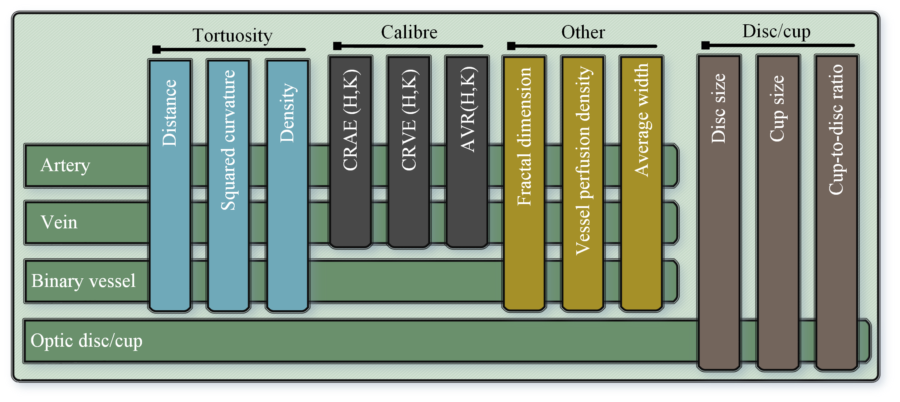

Automated Retinal Vascular Morphology Quantification via a Deep Learning Pipeline
[paper][code]
AutoMorph includes four modules, the retinal image preprocessing, image quality grading, anatomical segmentation (vessel, artery/vein, optic disc/cup), and clinically-relevant feature measurement. AutoMorph can be applied for data curation, segmentation task, and clinical correlation research, such as ’oculomics'. AutoMorph has been externally validated on public datasets and now deployed in large-scale clinical research with UK BioBank and AlzEye.

Three options to run AutoMorph:
More details can be referred to Github page.
Being involved in AutoMorph from any of following points:
Potential collaboration is warmly welcomed. It includes but not limited to AutoMorph deployment, cross validation, and technique upgrade. Please contact with the senior authors or first author.